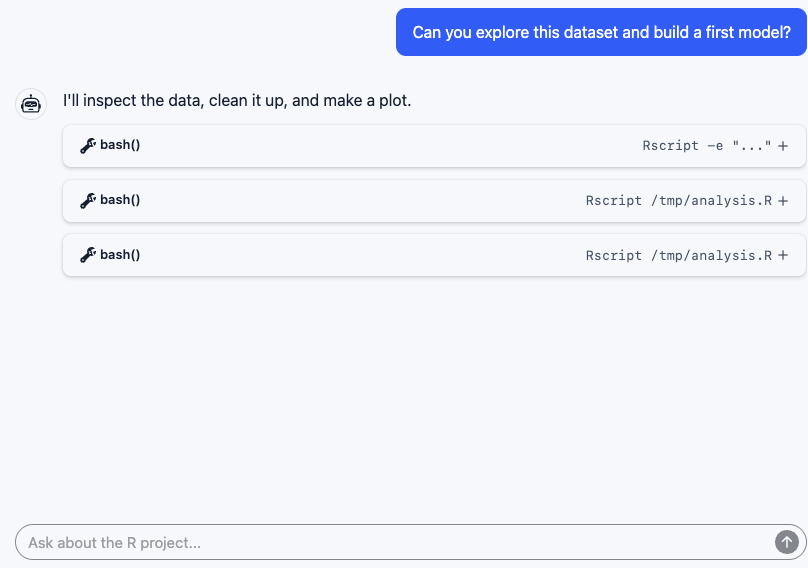
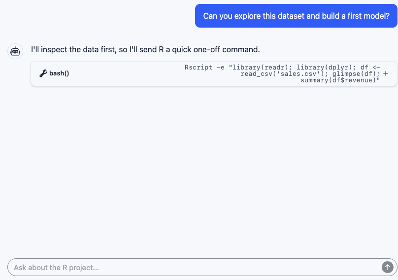
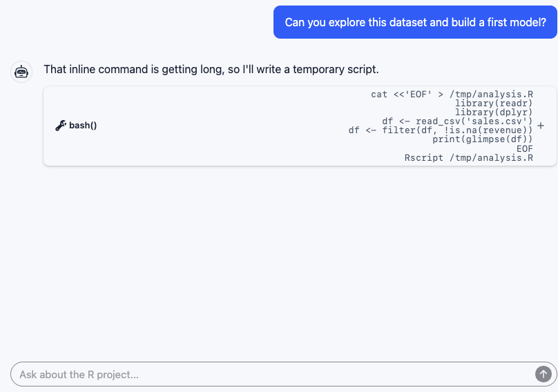

mcp-repl: exposing interactive R through MCP

R is interactive.
Often, the first bridge is a shell.

The shortest path works.
Ask R one question.
Return one answer.

The command gets longer.
Quoting gets fragile.
The agent starts writing files.
These are interactive surfaces.
Give the agent a real R session.
repl and repl_resetUnattended sessions
Workflow optimization
mcp-repl
IDE assistant
If an agent is going to work in R, it should get a live R session.
mcp-repl is the open source, agent-facing path: persistent, interactive, private, and sandboxed.
For interactive work with a human in the loop, use the integrated IDE assistant experience.
https://github.com/posit-dev/mcp-repl